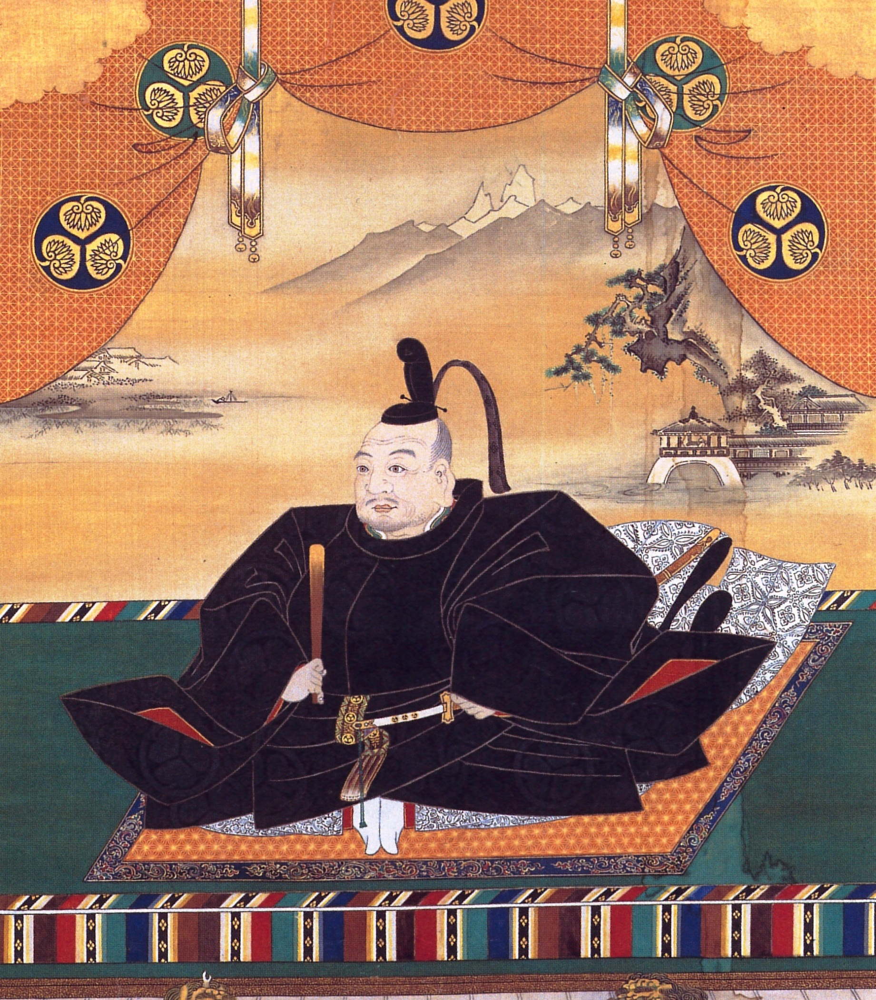
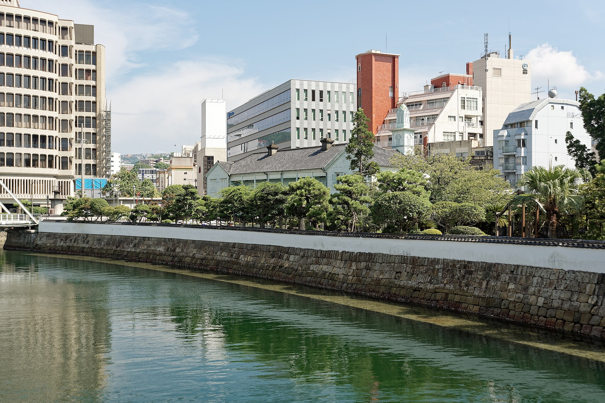
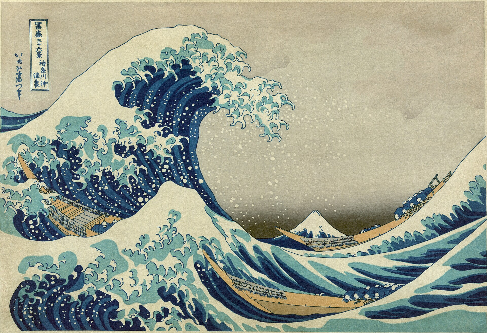

Überblick
Die Epoche Edo / Tokugawa (1603–1868) bezeichnet die lange Friedens- und Ordnungsphase unter dem Tokugawa-bakufu mit Sitz in Edo (dem heutigen Tōkyō). Nach der Schlacht von Sekigahara (1600) und der Ernennung Tokugawa Ieyasus zum Shōgun (1603) entstand eine stabile Doppelstruktur: Der Kaiserhof in Kyōto blieb rituell und symbolisch zentral; die reale Herrschaft über Land, Vasallen und Außenpolitik lag beim Shōgunat. Das politische Gerüst wird als bakuhan-System beschrieben: zentrale Militärregierung (bakufu) und regionale Domänen (han) der Daimyō.
Charakteristisch sind die Kontrolle der Daimyō durch sankin-kōtai (Wechselaufenthalt in Edo), die ständische Vier-Klassen-Ordnung (Krieger, Bauern, Handwerker, Kaufleute), restriktive Außenpolitik (oft als sakoku gefasst, jedoch keine totale Isolation) sowie eine blühende städtische Kultur (u. a. Genroku). Über zwei Jahrhunderte relativen inneren Friedens wuchsen Städte, Geldwirtschaft und Bildung; zugleich erodierten die fiskalische Basis der Kriegerklasse und die außenpolitische Abschirmung. Mit der Ankunft der US-Flotte unter Matthew C. Perry (1853–54), ungleichen Verträgen und der bakumatsu-Krise zerfiel die Tokugawa-Ordnung; 1868 folgte die Meiji-Restauration.
Datierungen sind weitgehend konventionell: 1603 als Beginn (Shōgun-Ernennung), 1867/1868 als Ende (Rückgabe der Macht bzw. Beginn Meiji). Manche Darstellungen betonen 1615 (Fall Ōsakas) als endgültige Konsolidierung oder 1867 (Rückgabe des Shōgunats durch Yoshinobu) als formalen Schluss. Gemeinsamer roter Faden ist die Umwandlung der Sengoku-Kriegerwelt in eine kontrollierte Friedensordnung und deren spätere Überforderung durch innere Strukturprobleme und den Druck westlicher Mächte.
Akteure
- Tokugawa Ieyasu (1543–1616): Sieger von Sekigahara; 1603 Shōgun; gründete das Edo-bakufu und legte die Grundlagen der Tokugawa-Herrschaft; 1615 Vernichtung der Toyotomi-Restmacht in Ōsaka.
- Tokugawa Hidetada (1579–1632): Zweiter Shōgun; festigte die Kontrolle über Daimyō und Hof; verschärfte Maßnahmen gegen das Christentum.
- Tokugawa Iemitsu (1604–1651): Dritter Shōgun; systematisierte sankin-kōtai und die Abschließungspolitik der 1630er Jahre; unterdrückte den Shimabara-Aufstand (1637–1638).
- Tokugawa-Shōgune (später): u. a. Yoshimune (Reformversuche der Kyōhō-Zeit), Ienari (lange Amtszeit, wachsende fiskalische Spannung), Yoshinobu (letzter Shōgun, 1866–1867/68).
- Daimyō: Territorialherren der han; unterschieden nach Nähe zu den Tokugawa in shinpan (verwandt), fudai (erbliche Vasallen) und tozama (äußere, oft ehemalige Gegner von Sekigahara).
- Hatamoto und Gokenin: Direkte Vasallen des bakufu; trugen die zentrale Verwaltung und das Militär.
- Kaiserhof in Kyōto: Formell souverän und rituell unverzichtbar; politisch lange entmachtet, im bakumatsu wieder Bezugspunkt für Gegner des Shōgunats.
- Kaufleute und Stadtbevölkerung (chōnin): Träger der Geldwirtschaft und der städtischen Kultur (Kabuki, Ukiyo-e, Verlagswesen), trotz niedriger ständischer Rangstellung.
- Niederländische Ostindien-Kompanie (VOC) und chinesische Händler: Einzige regelmäßige europäische bzw. ostasiatische Handelspartner in Nagasaki (Niederländer auf Dejima).
- Matthew C. Perry und westliche Mächte: 1853–54 erzwungene Öffnung; danach ungleiche Verträge und wachsender Druck.
- Bakumatsu-Akteure: u. a. Reformer und Gegner im bakufu; Domänen Chōshū und Satsuma; Figuren wie Ii Naosuke, Sakamoto Ryōma und die Meiji-Oligarchen, die 1868 die Restauration durchsetzten.
Was geschah
Konsolidierung

Ieyasu verlegte das Machtzentrum nach Edo und baute ein System, das Daimyō belohnte, umverteilte und überwachte. Nach dem Fall der Toyotomi in den Ōsaka-Feldzügen (1614–1615) gab es keinen ebenbürtigen Rivalen mehr. Hidetada und vor allem Iemitsu verdichteten die Institutionen: Die „Gesetze für die Kriegerhäuser“ (buke shohatto) regelten Burgenbau, Heirat und Verhalten der Daimyō. Das sankin-kōtai-System verpflichtete die Fürsten, abwechselnd in Edo zu residieren und Familie als faktische Geiseln dort zu lassen. Die teuren Reisen und Doppelhaushalte banden Ressourcen und banden die Elite an die Hauptstadt.
Das bakuhan-Gefüge erlaubte den Daimyō relative Autonomie in ihren Domänen (Steuern, lokale Verwaltung, eigene Krieger), behielt aber dem bakufu Außenpolitik, Münzwesen, große Verkehrswege und die Anerkennung der han vor. Strategische Umverteilung von Territorien, Kontrolle über Kaiserhof und große Tempel sowie ein Netz von Spitzeln und Kontrollämtern sicherten die Hegemonie der Tokugawa. Edo wuchs zur Millionenstadt; die Tokugawa kontrollierten direkt etwa ein Viertel der Reiserträge des Landes.
Gesellschaft und Wirtschaft
Ideologisch und rechtlich wurde eine ständische Ordnung fixiert, oft als shi-nō-kō-shō zusammengefasst: Samurai (Krieger/Beamte), Bauern, Handwerker, Kaufleute. Status war erblich und räumlich gebunden; Aufstieg zwischen den Ständen war erschwert, wenn auch nicht völlig unmöglich. Samurai bezogen typischerweise Reisstipendien (kokudaka-Logik) und sollten dem Dienstethos folgen; Bauern trugen die Hauptlast der Agrarsteuer. In der Praxis untergrub die Geldwirtschaft diese Hierarchie: Kaufleute in Ōsaka, Edo und Kyōto wurden reich, während viele Samurai und Domänen verschuldeten.
Landvermessung, Reissteuer und Domänenfinanzen blieben an die Agrarproduktion gebunden, während Handel, Handwerk und städtischer Konsum expandierten. Straßen (u. a. Tōkaidō), Poststationen und Flussschifffahrt verbanden die Regionen. Periodische Hungersnöte, Bauernproteste und städtische Unruhen zeigten die Spannungen. Reformphasen (Kyōhō unter Yoshimune, Kansei, Tenpō) versuchten Sparsamkeit, Agrarförderung und moralische Disziplin, ohne die strukturelle Kluft zwischen Reisökonomie und Geldmarkt dauerhaft zu schließen.
Außenpolitik und Abschließung

Die restriktive Außenpolitik der Tokugawa wird häufig sakoku („geschlossenes Land“) genannt. Der Begriff ist später und vereinfacht: Japan war nicht völlig isoliert. Ab den 1630er Jahren (unter Iemitsu) wurden japanische Auslandsreisen und die Rückkehr Ausgewanderter verboten, der portugiesische Handel eingestellt (1639) und der Kontakt mit Europäern weitgehend auf die Niederländer beschränkt. Chinesische und koreanische Beziehungen sowie der Ryūkyū- und Ainu-Handel blieben in kontrollierter Form bestehen. Die Niederländer handelten von der künstlichen Insel Dejima in Nagasaki aus; über sie gelangte europäisches Wissen (rangaku, „Hollandkunde“) nach Japan: Medizin, Astronomie, Kartografie und Technik wurden von Dolmetschern und Gelehrten rezipiert, ohne dass das bakufu eine allgemeine Öffnung zuließ. Zugleich blieben Tribut- und Handelsbeziehungen zu Korea (über Tsushima) und dem Ryūkyū-Königreich sowie der Handel mit China in Nagasaki unter Aufsicht.
Das Christentum, seit dem 16. Jahrhundert präsent, wurde schrittweise verboten und verfolgt. Der Shimabara-Aufstand (1637–1638), getragen von verarmten Bauern und Christen in Kyūshū, bestärkte das bakufu in der Unterdrückung und in der Abschließung gegenüber iberischen Mächten. Mission und geheime Gemeinden (kakure kirishitan) überlebten lokal, politisch war der christliche Einfluss gebrochen. Ziel der Politik war weniger Weltflucht als Kontrolle: Verhinderung von Daimyō-Allianzen mit Ausländern, Eindämmung religiöser Loyalitäten neben dem Shōgunat und Monopolisierung des Fernhandels.
Kultur

Im langen Frieden entfaltete sich eine vielfältige Kultur. Die Genroku-Zeit (um 1688–1704) gilt als Höhepunkt städtischer Kunst und Literatur: Ihara Saikakus Prosa, Matsuo Bashōs Haiku-Reisen, Chikamatsu Monzaemons Puppen- und Kabuki-Dramen. Ukiyo-e („Bilder der fließenden Welt“) und das Vergnügungsviertel Yoshiwara prägten das Bild des ukiyo. Kabuki und bunraku wurden Massenunterhaltung; Verlage und Leihbibliotheken verbreiteten Lesestoff.
Daneben blieben konfuzianische Gelehrsamkeit (u. a. Hayashi-Schule, später verschiedene Strömungen einschließlich kritischer und „nationaler“ Schulen), Shintō-Revitalisierung und buddhistische Institutionen wichtig. Bildung in Terakoya (Tempelschulen) und Domänenschulen erhöhte die Literalität; Lesen, Rechnen und moralische Unterweisung waren weit verbreitet. Architektur und Gartenkunst, Tee und Künste der Kriegerelite bestanden fort, während die chōnin-Kultur Geschmack und Markt zunehmend bestimmte. Die Momoyama-Pracht wich einer oft strengeren, lokal differenzierten Ästhetik unter Tokugawa-Aufsicht; Zensur und Sittenmandate begrenzten, vernichteten aber nicht die Kreativität.
Krise und Ende
Ab dem späten 18. und vor allem im 19. Jahrhundert verschärften sich die Probleme: fiskalische Erschöpfung von bakufu und han, Samurai-Verarmung, Hungersnöte (u. a. Tenmei, Tenpō), Proteste und Reformstau. Russische, britische und US-amerikanische Schiffe testeten die Küsten. 1853 erschien Commodore Matthew C. Perry mit Kriegsschiffen in der Bucht von Edo; 1854 erzwang der Vertrag von Kanagawa die Öffnung von Häfen. Es folgten ungleiche Verträge mit weiteren Mächten (u. a. Harris-Vertrag 1858): niedrige Zölle, Konsulargerichtsbarkeit, Verlust außenpolitischer Autonomie.
Die Bakumatsu-Phase (ca. 1853–1868) war von Spaltung geprägt: sonnō jōi („den Kaiser verehren, die Barbaren austreiben“) versus Öffnung und Stärkung; Konflikt zwischen bakufu und mächtigen tozama-Domänen, besonders Satsuma und Chōshū. Politische Morde, der Ansei-Purge unter Ii Naosuke, militärische Zusammenstöße (u. a. um Shimonoseki und Kagoshima) sowie wechselnde Allianzen destabilisierten das Regime. Das bakufu versuchte späte Reformen und eine Annäherung an den Hof, verlor aber die Initiative an eine Satsuma-Chōshū-Koalition. Shōgun Tokugawa Yoshinobu gab 1867 die Regierungsgewalt an den Kaiserhof zurück (taisei hōkan); 1868 siegten die restaurativen Kräfte im Boshin-Krieg. Die Meiji-Regierung übernahm die Zentralgewalt und leitete die Modernisierung ein.
Beginn
Der Beginn der Epoche ist die Institutionalisierung der Tokugawa-Hegemonie nach Sekigahara. 1603 ernannte der Kaiser Ieyasu zum sei-i taishōgun; Edo wurde zum politischen Zentrum. Die entscheidenden Schritte folgten: Umverteilung der han, Einbindung des Hofes, Ausbau der Vasallenkontrolle und 1615 die Beseitigung der Toyotomi. Unter Hidetada und Iemitsu wurden sankin-kōtai, Kriegergesetze und Abschließungsedikte systematisiert. Damit ging die Sengoku-Dynamik offener Kriegführung in eine kontrollierte Friedensordnung über: Samurai blieben herrschende Klasse, nun als Verwaltungs- und Militäradel unter einem dauerhaft dominanten bakufu.
Ende / Übergang
Das Ende markiert der Zusammenbruch der Tokugawa-Autorität unter innenpolitischem Stress und westlichem Vertragsdruck. Die Öffnung ab 1854 entzog dem bakufu das Monopol der Außenpolitik und legitimierte Kritik am Shōgunat. Domänenallianzen und kaiserliche Rhetorik verschoben die Loyalität zum Thron. Mit der Rückgabe der Macht 1867 und dem Sieg der Meiji-Kräfte 1868 endete das bakufu. Die Meiji-Restauration beseitigte ständische Barrieren, schaffte die han ab (1871) und baute einen modernen Zentralstaat auf. Institutionen und Eliten der Edo-Zeit wirkten teils fort (Bürokratie, Bildung, wirtschaftliche Netze), standen aber unter dem Programm von Industrialisierung, Wehrpflicht und Revision der ungleichen Verträge. Damit geht die frühneuzeitliche Tokugawa-Ordnung in das moderne Japan der Meiji-Zeit über.
Quellen
- Encyclopaedia Britannica – „Tokugawa Ieyasu“: https://www.britannica.com/biography/Tokugawa-Ieyasu
- Encyclopaedia Britannica – „Tokugawa period“: https://www.britannica.com/event/Tokugawa-period
- Encyclopaedia Britannica – „Japan: The bakuhan system“: https://www.britannica.com/place/Japan/The-bakuhan-system
- Encyclopaedia Britannica – „sakoku“: https://www.britannica.com/topic/sakoku
- Encyclopaedia Britannica – „sankin kōtai“: https://www.britannica.com/topic/sankin-kotai
- Encyclopaedia Britannica – „Matthew C. Perry“: https://www.britannica.com/biography/Matthew-C-Perry
- Encyclopaedia Britannica – „Meiji Restoration“: https://www.britannica.com/event/Meiji-Restoration
- Encyclopaedia Britannica – „Japan: The Tokugawa (or Edo) period (1603–1867)“: https://www.britannica.com/place/Japan/The-Tokugawa-or-Edo-period-1603-1867
- Metropolitan Museum of Art – „Art of the Edo Period (1615–1868)“: https://www.metmuseum.org/toah/hd/edop/hd_edop.htm
- Metropolitan Museum of Art, Heilbrunn Timeline – „Japan, 1600–1800 A.D.“: https://www.metmuseum.org/toah/ht/09/eaj
- Cambridge University Press – The Cambridge History of Japan, Vol. 4 (Early Modern Japan), hrsg. John Whitney Hall: https://www.cambridge.org/core/books/cambridge-history-of-japan/7F755780D61F3BA0A14F02728CD45AD1
- Cambridge University Press – Serie The Cambridge History of Japan (Vol. 4 Early Modern / Vol. 5 The Nineteenth Century): https://www.cambridge.org/gb/universitypress/subjects/history/series/cambridge-history-japan
- Asia for Educators (Columbia University) – „Japan: 1185–1868“ (timeline/overview): https://afe.easia.columbia.edu/timelines/japan_timeline.htm
- Asia for Educators (Columbia University) – „Japan: The Tokugawa (1600–1868)“ (Key Points): https://afe.easia.columbia.edu/main_pop/kpct/kp_1450-1750.htm
- Asia for Educators (Columbia University) – „The Prosperous Merchant in Tokugawa Society“: https://afe.easia.columbia.edu/special/japan_1450_merchant.htm
- National Diet Library (Japan) – Modern Japan in archives (Öffnung / Ende des Shōgunats): https://www.ndl.go.jp/modern/e/
- Metropolitan Museum of Art – „Art of the Pleasure Quarters and the Ukiyo-e Style“: https://www.metmuseum.org/toah/hd/plea/hd_plea.htm
- Encyclopaedia Britannica – „Treaty of Kanagawa“: https://www.britannica.com/event/Treaty-of-Kanagawa